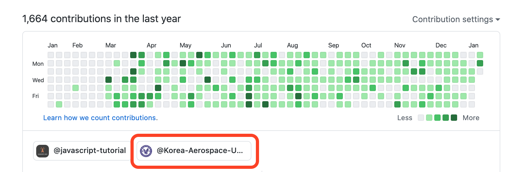

1. 튜토리얼 목차
이 짧은 튜토리얼에서는 다음 내용들을 다룹니다.
- 1. 왜 Git & GitHub 인가?
-
2. Git 설치하기 & GitHub 가입하기
-
3. 프로젝트 관리를 위한 Git 사용하기 (기본)
- 커밋과 브랜치를 통해 프로젝트 분기점 만들기
-
4. 프로젝트 협업을 위한 Git 사용하기 (심화)
- fetch, rebase를 통해 다른 프로젝트에 기여하기
-
5. 알아두면 좋은 Github 기능 소개
- 프로젝트에 이슈 남기기, Pull Request 알아보기
-
6. 이 프로젝트에 기여하기
- 지금까지 배운 내용들로 이 프로젝트에 기여해보기
2. 튜토리얼 보상
튜토리얼을 마치면 푸짐한 보상을 얻게 됩니다.
(??? : 여러분 속지 마세요 읍읍!)
I. 멋진 한국항공대 오픈소스 기여 뱃지

튜토리얼을 끝까지 완주하고 이 프로젝트에 이름을 남기면 항공대 오픈소스에
기여했다는 의미로 조직 배지가 나타납니다.
II. 튜토리얼을 완주하면서 얻은 경험과 지식!
이 튜토리얼을 완주하면서 배운 새로운 내용들이 언젠간 여러분에게
조금이나마 도움이 되길 기원합니다. 👍